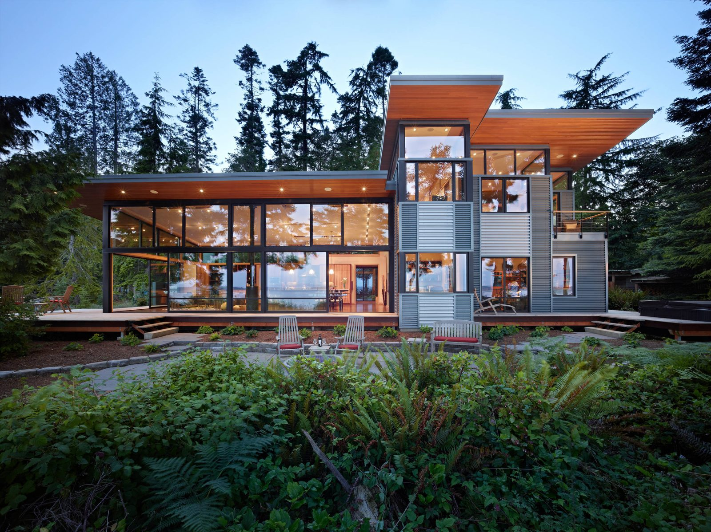

Gallery
A Closer Look At What We Do
A curated gallery of residential window and door installations, European systems, sliding and bifold doors, and service work throughout Southern California.
Selected Work
Recent Installations & Service
Like What You See?
Let's plan your project.